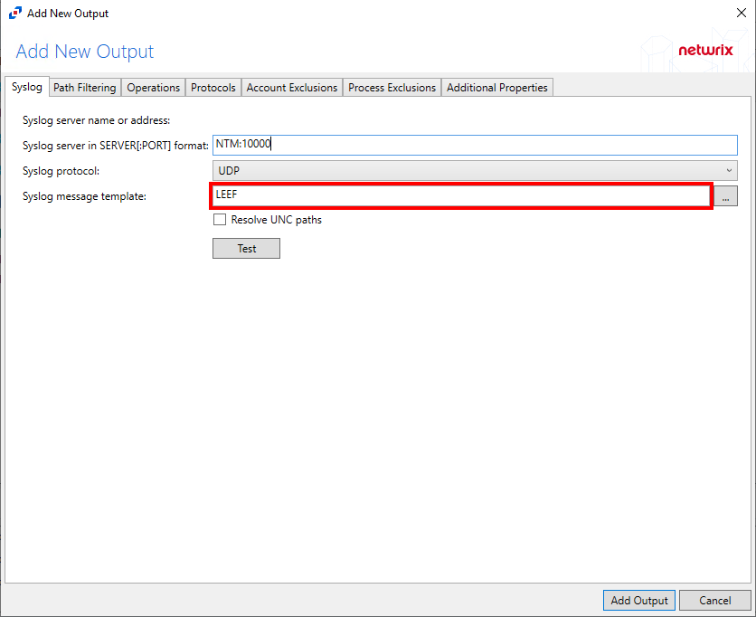
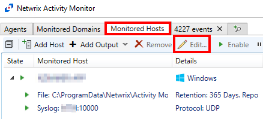
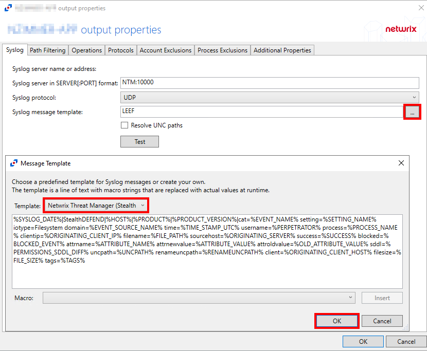
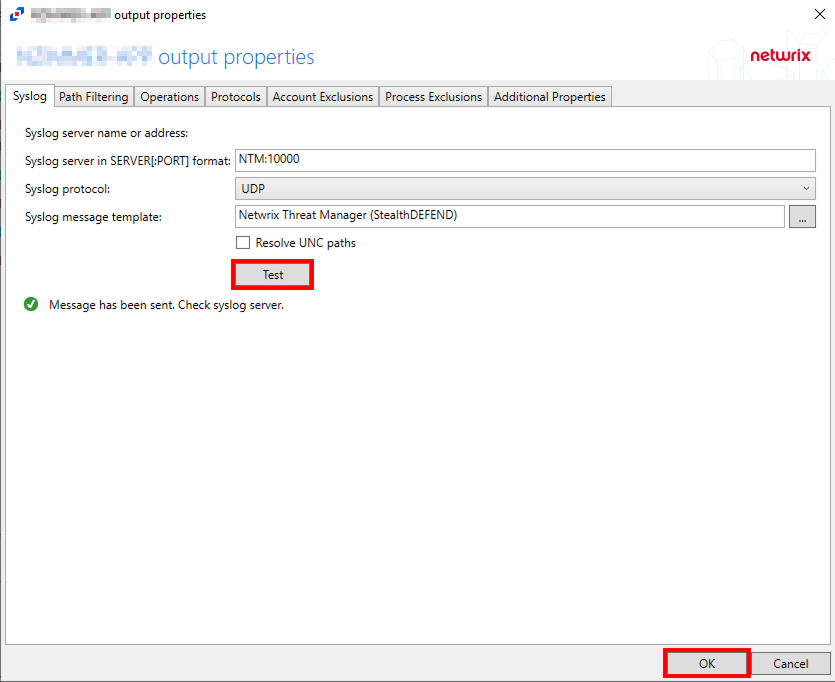

Symptom
Netwrix Threat Manager (NTM) is not receiving events from Netwrix Activity Monitor (NAM) file system event collection.
Cause
The incorrect Syslog message template of LEEF was selected.
Resolution
To resolve this issue, change the Syslog message template from LEEF to Netwrix Threat Manager (StealthDEFEND) as per the steps below:
-
Within the NAM console, click Monitored Hosts to select the needed host output for the Syslog item and Select Edit.
 -
Confirm the server and port needed for NTM.
-
Click the ellipsis to open the Message Template window, select the Netwrix Threat Manager (StealthDEFEND) Template, and click OK.
 -
Click Test to verify the template setting and click OK.
NOTE: This is UDP, so there is no true confirmation that a connection is/was made.
-
Return to the NTM Web console and check for new events once posted.
NOTE: This could take several minutes for the agent to update and for new events to occur.